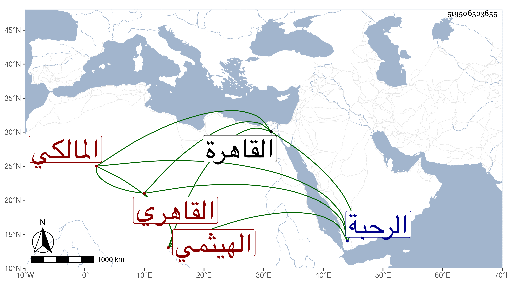

0902Sakhawi.DawLamic.ITO20230111-ara1.EIS1600.519506503855
Biography ID: 519506503855
312
أحمد بن محمد بن أبي بكر بن سليمان بن أبي بكر بن عمر بن صالح الشهاب أبو العباس الهيثمي القاهري المالكي ابن أخي الحافظ علي بن أبي بكر الآتي . ولد سنة ثمان وسبعين وسبعمائة وسمع من أبيه وعمه والزين العراقي وابن الشيخة والتنوخي وغيرهم ، وأجاز له في جملة أخوته العفيف النشاوري وجماعة ، وحدث سمع منه الفضلاء ، وكان خيرا يتكسب بالشهادة عند حبس الرحبة ، مات في ليلة الثلاثاء سادس ذي الحجة سنة أربعين بالقاهرة ودفن من الغد بالصحراء بعد أن صلى عليه شيخنا بمصلى باب النصر رحمه الله وإيانا .
